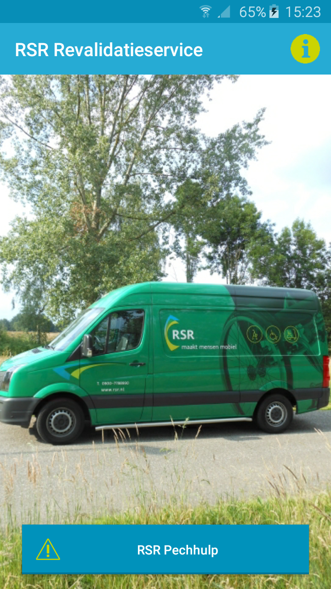
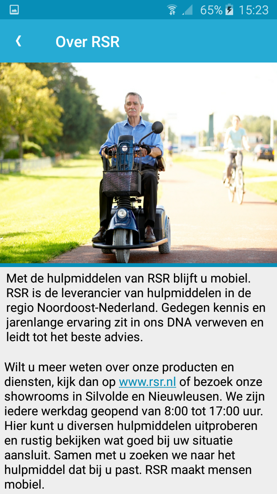
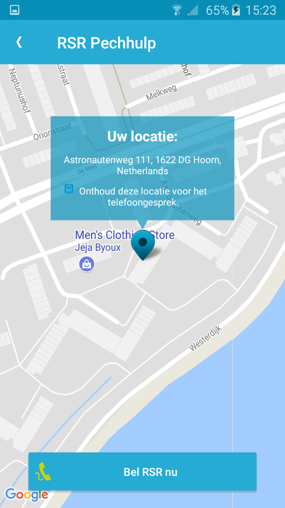

RSR clone
Om mobile development te oefenen heb ik een simpele app uitgekozen en deze nagemaakt,de app die ik heb uitgekozen is de RSR revalidatieservice app. De app is bedoelt om mensen die pech hebben met een scootmobiel. je ziet je lokatie en kan direct bellen naar hun klanten service.
De app is gemaakt in java, en is de eerste keer dat ik mobile development heb gedaan. Alle functionaltijd werkt, ook degenen zie je hier niet kan zien zoals een spash-screen en locatie check.
De code hiervan is te vinden op Github.


